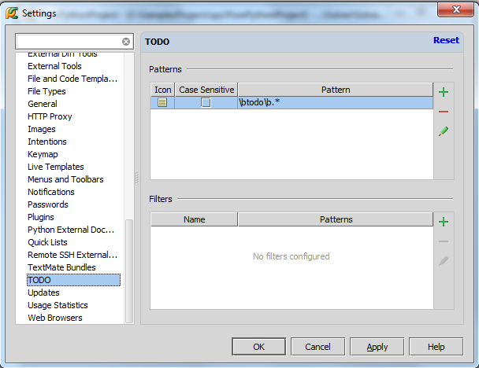
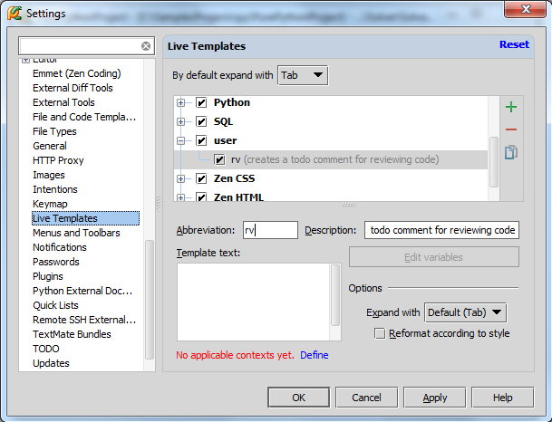

1、主题
在开发项目的过程中经常需要创建任务列表，对于一些小任务，在代码中插入便签注释会有奇效。
这种注释的格式如下：
2、创建便签注释
非常简单：
首先，将光标定位到相应行。
然后，创建一行注释（Ctrl+Slash）。
最后，在#后面，输入TODO或者todo，然后输入注释
3、浏览便签
在TODO tool window窗口中进行浏览（Alt+6或者View→Tool Windows→TODO）：
更多窗口相关信息参见Using Tool Windows。
4、便签条目之间的导航
一种方法是通过单击窗口右槽便签标记实现切换。
另一种方法是在TODO tool window窗口中切换。使用窗口中的快捷菜单命令Jump to Source，或者选中一条便签信息后按F4。
5、便签模式的私人订制
Pycharm自带两种便签模式，以"todo"开头或者以"TODO"开头。只要注释满足以上格式，就会在TODO tool window窗口中显示。
这里我们介绍如何创建其他格式的便签。
单击主工具栏的设置按钮，在IDE Settings节点下，单击TODO打开TODO page页：

假设我们希望在特定行创建代码浏览的相关便签，包含“review”关键字，接下来创建这种便签模式。
在Patterns部分单击绿色加号，输入如下正则表达式：
同时更改图标和配色方案：
设置完成后Pycharm会自动检测当前工程中的所有注释，若发现符合条件的便签注释，则会以新的配色方案在TODO tool window窗口中显示：
6、创建便签过滤器
假设我们只希望看到与代码浏览相关的便签信息，将其他便签隐藏，这里需要用到便签过滤器。
单击 TODO tool window的图标，选择Edit Filters：
当然也可以通过设置对话框中的 TODO page页完成相关操作（设置→IDE Settings→TODO）。
在Filters区域单击绿色加号。
在打开的Add Filter对话框中显示两种模式\btodo\b.* 和 \breview\b.*。这里我们选择隐藏传统的模式，只保留\breview\b/*模式。选中这个模式，输入过滤器名称：
7、过滤便签
返回TODO tool window窗口，单击：
选择review命令，在tool window窗口中显示过滤结果，双击对应条目可实现快速跳转：
8、为便签注释创建模板
创建模板有助于快速编写便签信息。
打开设置对话框，在IDE Settings节点下，单击 Live Templates：设置→IDE Settings→Live Templates：
单击绿色加号添加模板，输入相关信息：

注意到新建的模板会自动添加到用户组。
注意底部的红色提示，单击 Define，查看模板内容的可选信息。
最后，定义模板体：
这里有两个变量$WHO$以及$TEXT$。前者为输入区域，后者自动填充。单击Edit variables按钮：
在 Edit Template Variables dialog box对话框，选择变量$WHO$的内容：
测试一下模板。创建一个注释行，输入rv，按下TAB：
输入文本，回车：
模板生效。